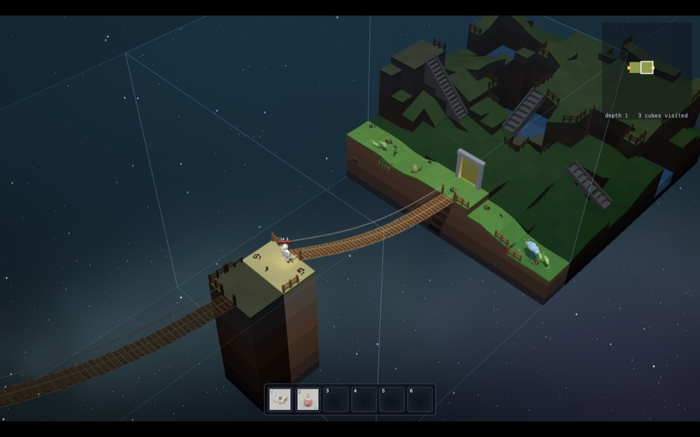

Inventing a whole world
Eine ganze Welt erfinden
Nobody drew the cubes of Cube Crawler. The game invents them while you play. This is called procedural generation: instead of drawing a level, you write the rules for making levels.
Niemand hat die Würfel von Cube Crawler gezeichnet. Das Spiel erfindet sie, während du spielst. Das nennt man prozedurale Erzeugung: Statt ein Level zu zeichnen, schreibst du die Regeln, nach denen Level entstehen.
The game does it like a team of four workers:
Das Spiel macht es wie ein Team aus vier Arbeitern:
- The planner draws a path of rooms for each depth: where you come in, where the well is, where the guardians wait.
- Der Planer zeichnet für jede Tiefe einen Weg aus Räumen: wo du hereinkommst, wo der Brunnen ist, wo die Wächter warten.
- The puzzle solver decides what kind of land each cube is: meadow, highland, river, lake... Neighbours must fit together like puzzle pieces.
- Der Puzzle-Löser entscheidet, welche Art Land jeder Würfel ist: Wiese, Hochland, Fluss, See... Nachbarn müssen zusammenpassen wie Puzzleteile.
- The builder makes one cube: hills, rivers, upper floors, stairs, bridges, ladders, fences.
- Der Baumeister baut einen Würfel: Hügel, Flüsse, obere Stockwerke, Treppen, Brücken, Leitern, Zäune.
- The inspector checks that you can really walk from every entrance to the exit. If not: throw it away and build again!
- Der Prüfer kontrolliert, dass du wirklich von jedem Eingang zum Ausgang laufen kannst. Wenn nicht: wegwerfen und neu bauen!

The planner: a path of rooms
Der Planer: ein Weg aus Räumen
Every depth has a route of 7 to 14 rooms. It starts right under the well of the depth above, and ends at the next well down.
Jede Tiefe hat eine Route aus 7 bis 14 Räumen. Sie fängt direkt unter dem Brunnen der Tiefe darüber an und endet am nächsten Brunnen nach unten.
Before the well there is always a strong descent guardian (gold), and on the way one or two side guardians (pink) block gates. Beat them to open the way.
Vor dem Brunnen steht immer ein starker Brunnenwächter (gold), und unterwegs versperren ein oder zwei Torwächter (pink) die Tore. Besiege sie, um den Weg zu öffnen.
Some rooms get a side room with a treasure chest.
Manche Räume bekommen einen Nebenraum mit einer Schatztruhe.
And in one room on the route waits a horde: a big pack of monsters that attack together (red dot).
Und in einem Raum auf der Route wartet eine Horde: ein großes Rudel Monster, die zusammen angreifen (roter Punkt).
Move the depth slider: deeper down, the ring gets smaller, until the core at depth 20.
Beweg den Tiefen-Regler: Je tiefer, desto kleiner wird der Ring, bis zum Kern in Tiefe 20.
How the planner finds a path: try, back up, try again
Wie der Planer einen Weg findet: probieren, zurückgehen, nochmal probieren
The planner has a ring of possible cubes around the middle of the world. It wants a path of, say, 11 rooms that ends on the inner edge of the ring.
Der Planer hat einen Ring aus möglichen Würfeln rund um die Mitte der Welt. Er will einen Weg aus, sagen wir, 11 Räumen, der am inneren Rand des Rings endet.
- Start at the room under the last well.
- Fang im Raum unter dem letzten Brunnen an.
- Step to a neighbour that is not used yet. (Which one first? The dice decide.)
- Geh zu einem Nachbarn, der noch nicht benutzt ist. (Welcher zuerst? Das entscheiden die Würfel.)
- Stuck, but not long enough yet? Step back and try a different neighbour.
- Steckengeblieben, aber noch nicht lang genug? Geh einen Schritt zurück und probier einen anderen Nachbarn.
- Long enough and at the right spot? Done!
- Lang genug und an der richtigen Stelle? Fertig!
This is called backtracking. It is how you solve a maze with a pencil: go until you hit a dead end, then go back to the last fork.
Das heißt Backtracking (Zurückverfolgen). So löst du ein Labyrinth mit dem Bleistift: Geh, bis du in einer Sackgasse landest, dann zurück zur letzten Abzweigung.
Then the extras
Dann die Extras
- Guardians: the room with the well always gets the descent guardian. One or two rooms along the way get side guardians.
- Wächter: Der Raum mit dem Brunnen bekommt immer den Brunnenwächter. Ein oder zwei Räume unterwegs bekommen Torwächter.
- Side rooms: some rooms get one extra room next to them, never more than 14 rooms per depth in total.
- Nebenräume: Manche Räume bekommen einen zusätzlichen Raum daneben, aber nie mehr als 14 Räume pro Tiefe insgesamt.
- Bridges: on depths 1 and 2, a straight row of rooms may become a gorge with one long bridge across it, or a bridge out to a lonely island (see the bridges).
- Brücken: In Tiefe 1 und 2 kann eine gerade Reihe von Räumen zu einer Schlucht mit einer langen Brücke darüber werden, oder zu einer Brücke hinaus zu einer einsamen Insel (siehe die Brücken).
- No shortcuts: side rooms never connect to other rooms, so you cannot sneak around a guardian.
- Keine Abkürzungen: Nebenräume sind nie mit anderen Räumen verbunden, also kannst du dich nicht an einem Wächter vorbeischleichen.
- Treasure: each depth plans four treasure sites, mostly in side rooms.
- Schätze: Jede Tiefe plant vier Schatzplätze, meistens in Nebenräumen.
- A horde: one room on the route gets a wild pack of monsters, all of one kind. The room before it gets only half its monsters, so you arrive fresh.
- Eine Horde: Ein Raum auf der Route bekommt ein wildes Rudel Monster, alle von einer Art. Der Raum davor bekommt nur die Hälfte seiner Monster, damit du ausgeruht ankommst.
The puzzle solver: pieces with matching edges
Der Puzzle-Löser: Teile mit passenden Kanten
Each cube is like a puzzle piece with four edges. Each edge is one of three kinds:
Jeder Würfel ist wie ein Puzzleteil mit vier Kanten. Jede Kante ist eine von drei Sorten:
- L lowland: the ground is low here
- L Tiefland (lowland): Der Boden ist hier niedrig
- H highland: the ground is high
- H Hochland (highland): Der Boden ist hoch
- W water: a river crosses this edge
- W Wasser: Ein Fluss geht über diese Kante
The rule: touching edges must match. A river that leaves one cube must enter the next one.
Die Regel: Kanten, die sich berühren, müssen passen. Ein Fluss, der einen Würfel verlässt, muss in den nächsten hineinfließen.
The edges decide the kind of land: all L is a meadow, all H a highland, two W a river...
Die Kanten bestimmen die Art Land: alles L ist eine Wiese (meadow), alles H ein Hochland (highland), zweimal W ein Fluss (river)...
Press Play and watch the world fill in.
Drück Abspielen und schau zu, wie sich die Welt füllt.
Wave function collapse
Wave Function Collapse
This puzzle method has a fancy name: wave function collapse (WFC). The name comes from physics, but the idea is simple:
Diese Puzzle-Methode hat einen schicken Namen: Wave Function Collapse (WFC, "Zusammenbruch der Wellenfunktion"). Der Name kommt aus der Physik, aber die Idee ist einfach:
- At first, every cube could still be any piece. (87 pieces, so the demo shows 87 options.)
- Am Anfang könnte jeder Würfel noch jedes Teil sein. (87 Teile, darum zeigt die Demo 87 Optionen.)
- Pick the cube with the fewest options left. Roll weighted dice to choose one of its pieces. Now it is "collapsed".
- Nimm den Würfel mit den wenigsten übrigen Optionen. Wirf gewichtete Würfel, um eins seiner Teile zu wählen. Jetzt ist er "kollabiert".
- Its neighbours now have fewer pieces that fit. Repeat!
- Seine Nachbarn haben jetzt weniger passende Teile. Wiederholen!
Picking the cube with the fewest options first is like Sudoku: you fill in the square where only one or two numbers are possible first.
Den Würfel mit den wenigsten Optionen zuerst zu nehmen, ist wie beim Sudoku: Du füllst zuerst das Feld aus, in das nur ein oder zwei Zahlen passen.
Two clever tricks
Zwei schlaue Tricks
Never stuck: many WFC puzzles can get stuck, with a hole where no piece fits. Here, there is a piece for every combination of edges (3×3×3×3 = 81 combinations). So it always works.
Nie steckenbleiben: Viele WFC-Puzzles können steckenbleiben, mit einem Loch, in das kein Teil passt. Hier gibt es für jede Kombination von Kanten ein Teil (3×3×3×3 = 81 Kombinationen). Also klappt es immer.
Big regions: meadows and highlands have big weights (6 and 5), the mixed pieces tiny ones (slope 0.35, gorge 0.03). So same-kind cubes clump together into big areas, and the mixed pieces appear where two areas meet. The theme of each depth changes the weights: the snowy peaks love highlands.
Große Gebiete: Wiesen und Hochländer haben große Gewichte (6 und 5), die gemischten Teile winzige (Hang 0,35, Schlucht 0,03). Darum klumpen gleiche Würfel zu großen Gebieten zusammen, und die gemischten Teile erscheinen dort, wo zwei Gebiete sich treffen. Das Thema jeder Tiefe ändert die Gewichte: Die Schneegipfel lieben Hochland.
In the game, a whole depth is solved at once, the first time you need any cube of it: all its rooms and their neighbours. So the order you explore in does not matter. The same seed always gives the same world, even if you walk backwards!
Im Spiel wird eine ganze Tiefe auf einmal gelöst, sobald du zum ersten Mal irgendeinen Würfel davon brauchst: alle ihre Räume und deren Nachbarn. Darum ist es egal, in welcher Reihenfolge du erkundest. Derselbe Seed gibt immer dieselbe Welt, auch wenn du rückwärts gehst!
That only works because every depth has an end. An endless world would need a new trick.
Das klappt nur, weil jede Tiefe ein Ende hat. Eine endlose Welt bräuchte einen neuen Trick.
Hills from noise
Hügel aus Rauschen
To make hills, the game uses noise: random numbers that change smoothly. Pick random heights at a few points, and blend gently in between. Add a second layer that is twice as wiggly and half as strong, and a third. Big hills with small bumps on top!
Für Hügel benutzt das Spiel Rauschen (Noise): Zufallszahlen, die sich sanft ändern. Wähle an ein paar Punkten zufällige Höhen und verbinde sie weich. Leg eine zweite Schicht drauf, die doppelt so wellig und halb so stark ist, und eine dritte. Große Hügel mit kleinen Buckeln obendrauf!
The noise is the same everywhere in the world, so the ground at the edge of one cube continues smoothly into the next one.
Das Rauschen ist überall in der Welt dasselbe. Darum geht der Boden am Rand eines Würfels sanft in den nächsten über.
On top of the hills, every cube gets one big shape, its archetype: a crack across the cube, a needle of rock, islands, a crater around a lake... Weighted dice pick it. The shape fades out near the edges, so the edges still match the next cube.
Über die Hügel bekommt jeder Würfel eine große Form, seinen Archetyp: eine Spalte quer durch den Würfel, eine Felsnadel, Inseln, ein Krater um einen See... Gewichtete Würfel wählen ihn aus. Die Form wird zu den Rändern hin schwächer, damit die Ränder trotzdem zum nächsten Würfel passen.
Walls that two cubes share
Wände, die sich zwei Würfel teilen
Two cubes next to each other share a wall, called a face. Cubes are built one at a time, maybe hours apart. How do their edges line up?
Zwei Würfel nebeneinander teilen sich eine Wand, die Seite (Face) heißt. Würfel werden einer nach dem anderen gebaut, vielleicht mit Stunden dazwischen. Wie passen ihre Ränder zusammen?
The trick: the face is decided first, and only once. Whichever of the two cubes is prepared first decides it, and saves it. Then both cubes build their edge to match it:
Der Trick: Die Seite wird zuerst entschieden, und nur einmal. Welcher der beiden Würfel zuerst vorbereitet wird, entscheidet sie und speichert sie. Dann bauen beide Würfel ihren Rand passend dazu:
- the ground height along the edge, 16 numbers from the noise
- die Bodenhöhe entlang des Rands, 16 Zahlen aus dem Rauschen
- where a river crosses it, and how wide it is
- wo ein Fluss darüber geht und wie breit er ist
- where the portal (the gate) stands, and on which floor
- wo das Portal (das Tor) steht und auf welchem Stockwerk
- on a gorge: the valley's shape instead of noise, and a pad where the bridge crosses
- bei einer Schlucht: die Form des Tals statt Rauschen, und ein Absatz, wo die Brücke hinübergeht
Each face even has its own dice (its own seed), so it comes out the same no matter which cube decided it.
Jede Seite hat sogar eigene Würfel (einen eigenen Seed). Darum kommt sie gleich heraus, egal welcher Würfel sie entschieden hat.
Did it work?
Hat es geklappt?
The game's makers checked over 400 pairs of neighbouring cubes: on every single one, the ground height and the water match on every edge cell, corners included.
Die Macher des Spiels haben über 400 Paare benachbarter Würfel geprüft: Bei jedem einzelnen passen Bodenhöhe und Wasser an jeder Randzelle, die Ecken eingeschlossen.
Inside the cube, the builder blends from the four edges towards the middle, and adds its own hills there. The middle can be wild, the edges always match.
Im Inneren des Würfels mischt der Baumeister von den vier Rändern zur Mitte hin und fügt dort seine eigenen Hügel hinzu. Die Mitte darf wild sein, die Ränder passen immer.
Long bridges over gorges
Lange Brücken über Schluchten
On the sky islands (depths 1 and 2), the planner sometimes picks a straight row of three or four rooms. The rooms in the middle become a gorge: a deep valley with a river, or just empty sky. Only one long bridge leads across.
Auf den Himmelsinseln (Tiefe 1 und 2) sucht sich der Planer manchmal eine gerade Reihe aus drei oder vier Räumen aus. Die Räume in der Mitte werden zu einer Schlucht: ein tiefes Tal mit einem Fluss, oder einfach leerer Himmel. Nur eine lange Brücke führt hinüber.
Every wall the bridge passes through gets a height for it. So a bridge can stay high over the valley, or come all the way down from the top of a cliff to the river bank. Where two gorge rooms meet, the bridge rests on a rock pillar.
Jede Wand, durch die die Brücke geht, bekommt eine Höhe für sie. So kann eine Brücke hoch über dem Tal bleiben oder von ganz oben auf einer Klippe bis zum Flussufer hinunterführen. Wo zwei Schluchträume sich treffen, ruht die Brücke auf einer Felssäule.
Sometimes the bridge leads away from the route, to a lonely island with a treasure. The bridge is the only way there. Like every cube, the gorge and the island only show up once you get there, one cube at a time as you cross.
Manchmal führt die Brücke weg von der Route, zu einer einsamen Insel mit einem Schatz. Die Brücke ist der einzige Weg dorthin, und wie jeder Würfel zeigen sich die Schlucht und die Insel erst, wenn du dort bist: ein Würfel nach dem anderen, während du hinübergehst.
Why not let the builder find it?
Warum sucht der Baumeister sie nicht selbst?
The builder's own bridges are short (up to 7 squares) and almost flat. A gorge bridge is 12 squares long and may climb half the height of the cube. So the builder gets it ready-made, from pad to pad, and the route just walks over it.
Die eigenen Brücken des Baumeisters sind kurz (bis zu 7 Felder) und fast flach. Eine Schluchtbrücke ist 12 Felder lang und kann die halbe Höhe des Würfels hochsteigen. Darum bekommt der Baumeister sie fertig, von Absatz zu Absatz, und die Route geht einfach darüber.

The builder: try the real cube factory
Der Baumeister: Probier die echte Würfelfabrik
This is the real generator of the game, running right here in your browser.
Das ist der echte Generator des Spiels, er läuft hier in deinem Browser.
Pick a depth and a room on its route, and press Build it! It plans the route, solves the puzzle, decides the faces and builds the cube, usually in a few thousandths of a second.
Wähl eine Tiefe und einen Raum auf ihrer Route und drück Bauen! Er plant die Route, löst das Puzzle, entscheidet die Seiten und baut den Würfel, meistens in ein paar Tausendstelsekunden.
Gold rings: gates to other cubes, and the well down. Cyan: the ring you came up through. Pink dashes: the route the builder planned. Grey: stone stairs. Brown: wooden bridges.
Goldene Ringe: Tore zu anderen Würfeln und der Brunnen nach unten. Türkis: der Ring, durch den du hochgekommen bist. Rosa Striche: die geplante Route. Grau: Steintreppen. Braun: Holzbrücken.
Rooms called "arena" are guardian rooms. Each one is a kind of arena: rolling hills, a gorge, a colosseum, a throne with steps, a ring of standing stones, a crater, a grove or a ruined courtyard. There is always room to fight. Try depth 9 or 17 for caves.
Räume namens "arena" sind Wächterräume. Jeder ist eine Art Arena: sanfte Hügel, eine Schlucht, ein Kolosseum, ein Thron mit Stufen, ein Ring aus stehenden Steinen, ein Krater, ein Hain oder ein zerfallener Hof. Platz zum Kämpfen gibt es immer. Probier Tiefe 9 oder 17 für Höhlen.
The assembly line
Das Fließband
The builder works in fixed steps, one after the other, like a factory line. Each step adds something:
Der Baumeister arbeitet in festen Schritten, einer nach dem anderen, wie ein Fließband in einer Fabrik. Jeder Schritt fügt etwas hinzu:
- How many floors stacked up (1 to 4)
- Wie viele Stockwerke übereinander (1 bis 4)
- Ground heights, blended from the four faces
- Bodenhöhen, gemischt aus den vier Seiten
- The big shape (archetype)
- Die große Form (Archetyp)
- Portals on the faces
- Portale an den Seiten
- Rivers, from crossing to crossing
- Flüsse, von Übergang zu Übergang
- Waterfalls into the cube below
- Wasserfälle in den Würfel darunter
- Space for treasure sites and a horde's camp
- Platz für Schatzplätze und das Lager einer Horde
- Upper floors (slabs)
- Obere Stockwerke (Platten)
- Ramps and supports
- Rampen und Stützen
- Pools and streams, then banks all around every water (no water in the air!)
- Teiche und Bäche, dann Ufer rund um jedes Wasser (kein Wasser in der Luft!)
- Every possible move: walk, drop, jump, stairs, bridge, ladder (a gorge's long bridge is laid down whole)
- Jede mögliche Bewegung: gehen, fallen, springen, Treppe, Brücke, Leiter (die lange Brücke einer Schlucht wird am Stück hingelegt)
- Routes between the portals, and to the horde and past it
- Routen zwischen den Portalen, und zur Horde und an ihr vorbei
- Ways up onto big cut-off platforms (small ones are just scenery), and escape routes from places you could fall into
- Wege hinauf auf große abgeschnittene Plattformen (kleine sind nur Kulisse), und Fluchtwege aus Stellen, in die man fallen kann
- Place the stairs, bridges and ladders
- Treppen, Brücken und Leitern aufstellen
- Smooth the ground
- Den Boden glätten
- Bridge styles and pillars
- Brückenstile und Pfeiler
- Fences on dangerous edges
- Zäune an gefährlichen Kanten
- The inspection Die Prüfung
Notice step 11 and 12: the builder first lists every move a hero could make, then searches for the cheapest way between the portals. That search is the same kind used for finding the way.
Schau dir Schritt 11 und 12 an: Der Baumeister listet erst jede Bewegung auf, die ein Held machen könnte, und sucht dann den billigsten Weg zwischen den Portalen. Das ist dieselbe Art Suche wie beim Wegfinden.
The inspector: throw it away and try again
Der Prüfer: wegwerfen und nochmal versuchen
After building, an inspector plays the cube in its head. Starting from the exit, it works out everything the hero can really do:
Nach dem Bauen spielt ein Prüfer den Würfel im Kopf durch. Vom Ausgang aus findet er alles heraus, was der Held wirklich tun kann:
- walk on flat ground and slopes, jump up one level, drop down cliffs that have no fence
- auf flachem Boden und Hängen gehen, eine Stufe hochspringen, Klippen ohne Zaun runterfallen
- swim, and climb out of water up to two levels
- schwimmen und bis zu zwei Stufen aus dem Wasser klettern
- use the stairs, bridges and ladders
- Treppen, Brücken und Leitern benutzen
If any portal cannot reach the exit, a route squeezes under a ceiling that is too low, or there is no way to the horde and on past it, the cube fails. The builder throws it away and tries again with new dice. Up to 200 tries!
Wenn irgendein Portal den Ausgang nicht erreicht, eine Route unter einer zu niedrigen Decke durchquetscht oder kein Weg zur Horde und an ihr vorbei führt, fällt der Würfel durch. Der Baumeister wirft ihn weg und versucht es mit neuen Würfeln. Bis zu 200 Versuche!
Usually the first try works: about four cubes out of five.
Meistens klappt der erste Versuch: bei etwa vier von fünf Würfeln.
A true story
Eine wahre Geschichte
An earlier version planned its routes from the first portal outwards. But you can drop down a cliff and not climb back up. So some routes only worked in the wrong direction!
Eine frühere Version hat ihre Routen vom ersten Portal aus nach außen geplant. Aber man kann eine Klippe runterfallen und nicht wieder hochklettern. Manche Routen funktionierten also nur in die falsche Richtung!
When the makers tested it: none of 12 test worlds could be finished, and in four of them you were trapped in the town.
Als die Macher es getestet haben: Keine von 12 Testwelten war schaffbar, und in vier davon war man in der Stadt gefangen.
After the fix, routes are planned from every portal to the exit, and the inspector checks it. Now 64 of 64 test worlds can be walked from the town all the way to depth 20.
Nach der Reparatur werden Routen von jedem Portal zum Ausgang geplant, und der Prüfer kontrolliert es. Jetzt sind 64 von 64 Testwelten von der Stadt bis Tiefe 20 begehbar.
Lesson: write a check for the thing that must never break.
Lehre: Schreib eine Prüfung für das, was nie kaputtgehen darf.
The real code: collapsing cubes
Der echte Code: Würfel kollabieren lassen
domain: keep only the pieces where every collapsed neighbour's touching edge (OPP6[d] is the opposite side) matches ours.
domain: Behalte nur die Teile, bei denen die berührende Kante jedes kollabierten Nachbarn (OPP6[d] ist die gegenüberliegende Seite) zu unserer passt.
entropy is a measure of "how many choices, and how evenly weighted". Low entropy = few real choices.
entropy misst "wie viele Möglichkeiten, und wie gleichmäßig gewichtet". Niedrige Entropie = wenig echte Auswahl.
The hashKey(k) % 1000 * 1e-6 part is a tiny tie-breaker, so two equal cubes are always picked in the same order.
Der Teil hashKey(k) % 1000 * 1e-6 ist ein winziger Gleichstandsbrecher, damit zwei gleiche Würfel immer in derselben Reihenfolge gewählt werden.
Then the marble bag picks a piece, and layersOf decides how many floors it gets (leaning towards what the neighbours have, so tall regions form).
Dann wählt der Murmelbeutel ein Teil, und layersOf entscheidet, wie viele Stockwerke es bekommt (es lehnt sich an die Nachbarn an, damit hohe Gebiete entstehen).
collapseDepth first pins the cubes of a gorge (spanPins): their edges follow the bridge, and they get one floor. Then it collects every room of a depth and the cubes next to them, sorts them, and hands them all to collapse at once. depths remembers which depths are already done.
collapseDepth legt zuerst die Würfel einer Schlucht fest (spanPins): Ihre Kanten richten sich nach der Brücke, und sie bekommen ein Stockwerk. Dann sammelt es alle Räume einer Tiefe und die Würfel daneben, sortiert sie und gibt sie alle auf einmal an collapse. depths merkt sich, welche Tiefen schon fertig sind.
The real code: build, inspect, retry
Der echte Code: bauen, prüfen, nochmal
Each stage is a function that gets the same ctx (the context: the cube under construction) and adds its part.
Jede Station ist eine Funktion, die denselben ctx bekommt (den Kontext: den Würfel im Bau) und ihren Teil hinzufügt.
return null means "this attempt failed". The loop in generate then tries the next seed: spec.seed + a * 7919, mixed by hash32. (7919 is just a big prime number, so the seeds of the attempts are far apart.)
return null heißt "dieser Versuch ist schiefgegangen". Die Schleife in generate probiert dann den nächsten Seed: spec.seed + a * 7919, gemischt durch hash32. (7919 ist einfach eine große Primzahl, damit die Seeds der Versuche weit auseinander liegen.)
The spec is what the world decided for this cube: its faces, portals and kind. Retries change the dice, but never the spec, so the edges always keep matching.
Die spec ist, was die Welt für diesen Würfel entschieden hat: seine Seiten, Portale und Art. Neue Versuche ändern die Würfel, aber nie die spec. Darum passen die Ränder immer.
It also builds the treasure sites and the horde's camp; the town and the guardian arenas have builders of their own.
Sie baut auch die Schatzplätze und das Lager der Horde; die Stadt und die Wächter-Arenen haben eigene Baumeister.
The real code: the backtracking route
Der echte Code: die Backtracking-Route
visit calls itself for the next step. That is called recursion.
visit ruft sich für den nächsten Schritt selbst auf. Das nennt man Rekursion.
If the path is long enough, it asks goal(c): "are we in the right place to end?"
Wenn der Weg lang genug ist, fragt sie goal(c): "Sind wir an der richtigen Stelle, um aufzuhören?"
Otherwise it tries each free neighbour. out.push walks forward. If the deeper visit() fails, out.pop() walks back, and the loop tries the next neighbour.
Sonst probiert sie jeden freien Nachbarn. out.push geht vorwärts. Wenn das tiefere visit() scheitert, geht out.pop() zurück, und die Schleife probiert den nächsten Nachbarn.
Each cell gets a random priority once, so the order of trying is shuffled by the seed.
Jede Zelle bekommt einmal eine zufällige priority, so mischt der Seed die Reihenfolge des Ausprobierens.